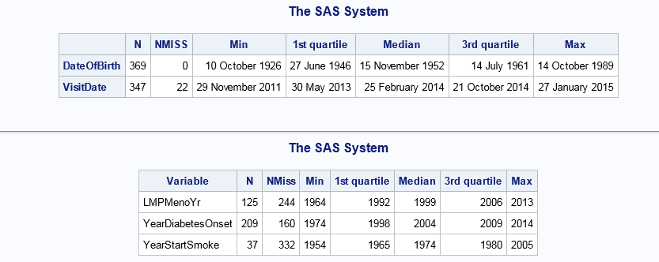
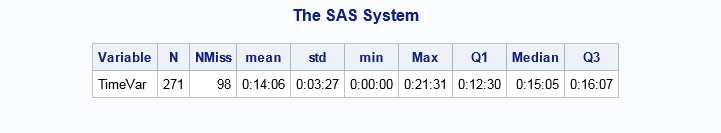

|
Version 2.2 (November 2015)
SAS macro %DatesDesc
Descriptive statistics for date variables
Syntax
%DatesDesc(data, datevars, fmt=worddatx., by=);
%TimeDesc(data, TimeVars, stats=N NMiss mean std min Max Q1 Median Q3, nfmt=4.0, fmt=time8., qfmt=time8.); %YearsDesc(data, YearVars, nfmt=4.0);
%DatesDesc arguments list
Examples
Below are an example of a call to each of the two macros %DatesDesc and %YearsDesc followed by the corresponding outputs.
%DatesDesc(tmp, DateofBirth VisitDate);
%YearsDesc(tmp, LMPMenoYr YearDiabetesOnset YearStartSmoke); %TimeDesc(tmp, TimeVar);   Code
%macro DatesDesc(data, datevars, fmt=worddatx., by=);
%local b byvar ndatevars datevar i nby usedby varnamelen; %local dscontents dsdate dsdates dsdates2; %local files2append; %let ndatevars = %DatesDesc_ntokens(&datevars); %let usedby = %eval(%length(&by)); %let varnamelen = %DatesDesc_lmax(&datevars); %let dscontents = %DatesDesc_NewDatasetName(contents); %let dsdates2 = %DatesDesc_NewDatasetName(dates2); proc contents data=&data out=&dscontents (keep=name label) noprint; run; %do i = 1 %to &ndatevars; %let datevar = %scan(&datevars, &i); %let dsdate = %DatesDesc_NewDatasetName(date); proc univariate data=&data noprint; var &datevar; %if &usedby %then %do; class &by; %end; output out=&dsdate n=n nmiss=nmiss min=min q1=q1 median=median q3=q3 max=max; run; data &dsdate; set &dsdate; datevar = put("&datevar", char&varnamelen..); run; %let files2append=&files2append &dsdate; %end; %let dsdates = %DatesDesc_NewDatasetName(dates); %DatesDesc_MultiAppend(&dsdates, &files2append); proc sql noprint; select max(max(length(name)), max(length(strip(compbl(label))))) into :varnamelen from &dsContents; quit; proc sql; create table &dsdates2 as select c.name, strip(compbl(c.label)) as label, d.n as DatesN, d.nmiss as DatesNMiss, d.min as DatesMin, d.q1 as DatesQ1, d.median as DatesMedian, d.q3 as DatesQ3, d.max as DatesMax, ifc(notspace(calculated label), calculated label, c.name) as datevar length=&varnamelen %if &usedby %then %do; %let nby = %DatesDesc_ntokens(&by); %do b = 1 %to &nby; %let byvar = %scan(&by, &b); , d.&byvar %end; %end; from &dscontents as c, &dsdates as d where upcase(d.datevar) = upcase(c.name); quit; proc sql noprint; select max(length(datevar))+3 into :varnamelen from &dsdates2; quit; proc tabulate data=&dsdates2; var DatesN DatesNMiss DatesMin DatesMax DatesQ1 DatesMedian DatesQ3; class datevar &by; table %if &usedby %then %do; datevar='' * %DatesDesc_ProductOf(&by) %end; %else %do; datevar='' %end; , DatesN='N'*mean=''*f=5.0 DatesNMiss='NMISS'*mean=''*f=5.0 DatesMin='Min'*mean=''*f=&fmt DatesQ1='1st quartile'*mean=''*f=&fmt DatesMedian='Median'*mean=''*f=&fmt DatesQ3='3rd quartile'*mean=''*f=&fmt Datesmax='Max'*mean=''*f=&fmt/ rts=&varnamelen; run; proc datasets nolist; delete &dsdates &dsdates2 &dscontents; run; %mend DatesDesc; %macro DatesDesc_lmax(tokens, useStr=0); %local ntokens token l res i; %let res = 0; %let ntokens = %DatesDesc_ntokens(&tokens); %do i = 1 %to %DatesDesc_ntokens(&tokens); %if &useStr %then %do; %let token = %scan(&tokens, &i, %str( )); %end; %else %do; %let token = %scan(&tokens, &i); %end; %let l = %length(&token); %if &l > &res %then %do; %let res = &l; %end; %end; %eval(&res) %mend DatesDesc_lmax; %macro DatesDesc_MultiAppend(dsOut, datasets, clean=1, fileindex=); %local dsContents dsContentsAll dsTmp dsTmpContents dsTmpOut dsVarsDescription; %local d ds dtlov filesConsistent nds nvars typesInconsistent; %local in1stfile type1 types1 v varin1 varname varnames varlen varlens vartype vartypes; %DatesDesc_Touch(&dsOut); %let dsContents = %DatesDesc_NewDatasetName(contents); %let dsContentsAll = %DatesDesc_NewDatasetName(contentsall); %let dsTmpContents = %DatesDesc_NewDatasetName(tmpcontents); %let nds = %DatesDesc_ntokens(&datasets); %do d = 1 %to &nds; %let ds = %scan(&datasets, &d, %str( )); proc contents data=&ds noprint out=&dsContents (keep=name type length varnum); run; proc sql; create table &dsTmpContents as select *, lowcase(name) as lcname, &d as FileIndex from &dsContents; quit; %if &d eq 1 %then %do; proc datasets nolist; change &dsTmpContents=&dsContentsAll; delete &dsContents; quit; %end; %else %do; proc datasets nolist; append data=&dsTmpContents base=&dsContentsAll; delete &dsContents &dsTmpContents; quit; %end; %end; %let dsVarsDescription = %DatesDesc_NewDatasetName(varsdesc); proc sql noprint; create table &dsVarsDescription as select lcname, max(type) as type, max(type) eq min(type) as typeConsistent, max(length) as len, max(length) eq min(length) as lenConsistent, min(FileIndex) as FileIndex, N(lcname) as NFiles, (calculated NFiles) eq &nds as InEachds from &dsContentsAll group lcname; select (sum(typeConsistent) eq N(lcname)) * (sum(lenConsistent) eq N(lcname)) * (sum(InEachds) eq N(lcname)), N(lcname) into :filesConsistent, :nvars from &dsVarsDescription; quit; %let dsTmpOut = %DatesDesc_NewDatasetName(tmpout); %if &filesConsistent %then %do; %let ds = %scan(&datasets, 1, %str( )); proc sql; create table &dsTmpOut as select * %if %length(%superq(fileindex)) %then %do; , 1 as &fileindex %end; from &ds; quit; %end; %else %do; proc sql noprint; select (sum(typeConsistent) ne N(lcname)) into :typesInconsistent from &dsVarsDescription; quit; %if &typesInconsistent %then %do; * List variables with different types from one file to another; proc sql noprint; select lcname into :dtlov separated by ',' from &dsVarsDescription where not typeConsistent; quit; %put WARNING: The following variables(s) have different types from one file to another: &dtlov; %end; %let dsTmp = %DatesDesc_NewDatasetName(tmp); proc sql; create table &dsTmp as select d.*, a.name, a.varnum, d.FileIndex eq 1 as FoundIn1stFile, a.type as FirstType from &dsVarsDescription as d, &dsContentsAll as a where d.lcname eq a.lcname and d.FileIndex eq a.FileIndex; quit; proc sort data=&dsTmp; by FileIndex varnum; run; proc sql noprint; select name, len, type, FoundIn1stFile, FirstType into: varnames separated by ' ', :varlens separated by ' ', :vartypes separated by ' ', :in1stfile separated by ' ', :types1 separated by ' ' from &dsTmp; quit; proc datasets nolist; delete &dsTmp; quit; %let ds = %scan(&datasets, 1, %str( )); proc sql; create table &dsTmpOut as select %do v = 1 %to &nvars; %let varname = %scan(&varnames, &v); %let varlen = %scan(&varlens, &v); %let vartype = %scan(&vartypes, &v); %let varin1 = %scan(&in1stfile, &v); %let type1 = %scan(&types1, &v); %if &v ne 1 %then %do; , %end; %if &varin1 %then %do; %if &type1 ne &vartype %then %do; put(&varname, &varlen..) as &varname %end; %else %do; &varname length=&varlen %end; %end; %else %do; %if &vartype eq 1 %then %do; . as &varname length=&varlen %end; %else %if &vartype eq 2 %then %do; "" as &varname length=&varlen %end; %end; %end; %if %length(%superq(fileindex)) %then %do; , 1 as &fileindex %end; from &ds; quit; %end; %if %length(%superq(fileindex)) %then %do; %let dsTmp = %DatesDesc_NewDatasetName(tmp); %do d = 2 %to &nds; %let ds = %scan(&datasets, &d, %str( )); proc sql; create table &dsTmp as select *, &d as &fileindex from &ds; quit; proc datasets nolist; append data=&dsTmp base=&dsTmpOut nowarn; delete &dsTmp; quit; %end; %end; %else %do; %do d = 2 %to &nds; %let ds = %scan(&datasets, &d, %str( )); proc datasets nolist; append data=&ds base=&dsTmpOut nowarn; quit; %end; %end; proc datasets nolist; delete &dsOut; change &dsTmpOut=&dsOut; delete &dsContentsAll &dsVarsDescription %if &clean %then %do; &datasets %end; ; quit; %mend DatesDesc_MultiAppend; %macro DatesDesc_NewDatasetName(proposalname); %*Finds the first unused dataset named *datasetname*, adding a leading underscore and a numeric suffix as large as necessary to make it unique!; %local i newdatasetname; %let proposalname=%sysfunc(compress(&proposalname)); %let newdatasetname=_&proposalname; %do %while(%sysfunc(exist(&newdatasetname))); %let i = %eval(&i+1); %let newdatasetname=_&proposalname&i; %end; &newdatasetname %mend DatesDesc_NewDatasetName; %macro DatesDesc_ntokens(list); %eval(1 + %length(%sysfunc(compbl(&list))) - %length(%sysfunc(compress(&list)))) %mend DatesDesc_ntokens; %macro DatesDesc_ProductOf( varslist ); %sysfunc(tranwrd(%sysfunc(compbl(%lowcase(&varslist))),%quote( ),%quote( * ))) %mend DatesDesc_ProductOf; %macro DatesDesc_Touch(newfiles); %local f file nfiles; %let nfiles = %DatesDesc_ntokens(&newfiles); %do f = 1 %to &nfiles; %let file = %scan(&newfiles, &f, %str( )); data &file; stop; run; %end; %mend DatesDesc_Touch; %macro ExcelDate(datevar, newdatevar=&datevar, datefmt=worddatx.); if &datevar < 61 then &newdatevar = &datevar - 21915; else if &datevar >= 61 then &newdatevar = &datevar - 21916; format &newdatevar &datefmt; %mend ExcelDate; %macro TimeDesc(ds, xvars, stats=N NMiss mean std min Max Q1 Median Q3, nfmt=4.0, fmt=time8., qfmt=time8.); %local dsStats dsTmp dsTmpStats; %local s stat nstats v var nvars; %let dsStats = %DatesDesc_NewDatasetName(stats); %let dsTmp = %DatesDesc_NewDatasetName(tmp); %let dsTmpStats = %DatesDesc_NewDatasetName(tmpstats); %let nvars = %DatesDesc_ntokens(&xvars); %let nstats = %DatesDesc_ntokens(&stats); %do s = 1 %to &nstats; %let stat = %scan(&stats, &s); proc means data=&ds noprint; var &xvars; output out=&dsTmp &stat=; run; data &dsTmp (keep=lc Variable &stat); length Variable $ 32; set &dsTmp; %do v = 1 %to &nvars; %let var = %scan(&xvars, &v); Variable = "&var"; &stat = &var; lc = lowcase(Variable); output; %end; run; %if &s eq 1 %then %do; proc datasets nolist; change &dsTmp=&dsStats; quit; %end; %else %do; proc sql; create table &dsTmpStats as select x.*, t.&stat from &dsStats as x, &dsTmp as t where x.Variable eq t.Variable; quit; proc datasets nolist; delete &dsStats &dsTmp; change &dsTmpStats=&dsStats; quit; %end; %end; proc sort data=&dsStats; by lc; run; proc report data=&dsStats nofs style={rules=none cellspacing=0} nowd headskip headline missing; column Variable N NMiss Mean std Min Max Q1 Median Q3; define Variable / display; define N / analysis mean f=&nfmt; define NMiss / analysis mean f=&nfmt; define Mean / analysis mean f=&fmt; define std / analysis mean f=&fmt; define Min / analysis mean f=&qfmt; define Max / analysis mean f=&qfmt; define Q1 / analysis mean f=&qfmt; define Median / analysis mean f=&qfmt; define Q3 / analysis mean f=&qfmt; run; proc datasets nolist; delete &dsStats; quit; %mend TimeDesc; %macro YearsDesc(ds, yrvars, nfmt=4.0); %local dsStats dsTmp dsTmpStats; %local s stat stats nstats v var nvars; %let stats=N NMiss Min Max Q1 Median Q3; %let dsStats = %DatesDesc_NewDatasetName(stats); %let dsTmp = %DatesDesc_NewDatasetName(tmp); %let dsTmpStats = %DatesDesc_NewDatasetName(tmpstats); %let nvars = %DatesDesc_ntokens(&yrvars); %let nstats = %DatesDesc_ntokens(&stats); %do s = 1 %to &nstats; %let stat = %scan(&stats, &s); proc means data=&ds noprint; var &yrvars; output out=&dsTmp &stat=; run; data &dsTmp (keep=lc Variable &stat); length Variable $ 32; set &dsTmp; %do v = 1 %to &nvars; %let var = %scan(&yrvars, &v); Variable = "&var"; &stat = &var; lc = lowcase(Variable); output; %end; run; %if &s eq 1 %then %do; proc datasets nolist; change &dsTmp=&dsStats; quit; %end; %else %do; proc sql; create table &dsTmpStats as select x.*, t.&stat from &dsStats as x, &dsTmp as t where x.Variable eq t.Variable; quit; proc datasets nolist; delete &dsStats &dsTmp; change &dsTmpStats=&dsStats; quit; %end; %end; proc sort data=&dsStats; by lc; run; proc report data=&dsStats nofs style={rules=none cellspacing=0} nowd headskip headline missing; column Variable N NMiss Min Q1 Median Q3 Max; define Variable / display; define N / analysis mean f=&nfmt; define NMiss / analysis mean f=&nfmt; define Min / analysis mean f=4.0; define Q1 / analysis mean f=4.0 '1st quartile'; define Median / analysis mean f=4.0 'Median'; define Q3 / analysis mean f=4.0 '3rd quartile'; define Max / analysis mean f=4.0; run; proc datasets nolist; delete &dsStats; quit; %mend YearsDesc; |